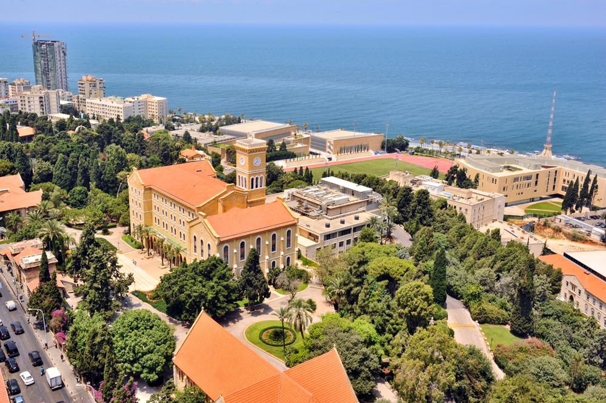

الدراسه في الجامعه الامريكيه في بيروت

تأسست عام 1866م شركة خاصة مستقلة هدفها إنشاء نواة لجامعة في لبنان، على أن تكون مؤسسة غير طائفية. أطلق عليها في ذلك الوقت اسم الكلية السورية البروتستانتية، وقد أسسها دانيال بليس [2] مبشر أمريكي ولد عام 1823، وعين فيها كأول رئيس لها. وتقديرا له سمي الشارع الملاصق لسور الجامعة باسمه شارع بليس وكذلك سميت إحدى مباني الجامعة الرئيسة باسمه Bliss Hall
البداية
بدأت الكلية العمل بموجب ميثاق منحها اعترافاً حصل عليه الدكتور دانيال بليس من ولاية نيويورك في الولايات المتحدة الأمريكية. افتتحت الجامعة أبوابها في 3 ديسمبر عام 1866م لتمارس نشاطها في منزل مستأجر في أحد مناطق بيروت وسجل فيها 16 طالباً فقط.
كان منهاج الكلية في سنتها الأولى (1866-1867) يشمل تدريس اللغات العربية والإنكليزية والفرنسية والتركية واللاتينية ثم الرياضيات وتاريخ العرب القديم وتاريخ الديانات والتوراة وكانت الهيئة التعليمية تتألف من 13 معلماً.
:وفي العام الأكاديمي 1878-1879، أصبحت الدراسة على الشكل التالي
السنة الأولى (فرشمان): الصرف والنحو واللغة الإنجليزية والأدب والجبر والهندسة والكتاب المقدس والموسيقى والخطابة.
السنة الرابعة: الفلك والفلسفة العقلية والأخلاق والتاريخ وعلم طبقات الأرض وعلم النبات والحيوان والموسيقى والإنشاء والخطابة والكتاب المقدس.
في عام 1867، أنشئت كليتي الصيدلة والطب. وكان التدريس باللغة العربية حتى عام 1887 ثم أصبح باللغة الإنجليزية.
وبين عام 1871 و1907، خرجت الكلية 154 طالبا من سوريا، و75 طالبا من مصر، و3 طلاب من العراق، 69 طالبا من بقية الولايات العثمانية.
وفي عام 1834، نقلت الإرسالية الأميركية مطبعتها من مالطا إلى بيروت مما ساعد في ازدهار النشر في لبنان
التخطيط للتوسع
ولإنشاء مباني الجامعة واستعدادا لتوسعها مستقبلا اختيرت أرض مساحتها 736,900 فدان في منطقة راس بيروت لتشكل حرما جامعيا يطل على البحر الأبيض المتوسط ويشرف على جبل لبنان، كما يمكن منه مشاهدة قمة جبل صنين
إدارتها ومعاييرها
الجامعة مستقلة يحكمها مجلس أمناء يتألف من عناصر قيادية مهمة في مجال التجارة والتعليم والسلك الدبلوماسي والهندسة والعلوم والطب.
وقد تبنت الكلية منذ تأسيسها عام 1866 وحتى أصبحت الجامعة الأمريكية في بيروت عام 1920، معايير وقيم التعليم العالى المتبعة في أرقى جامعات العالم. كما اعتمدت في تدريسها المنهج الأميركي في التعليم. وقد استخدمت اللغة العربية كلغة الكلية الرسمية لمدة 17 سنة ثم اعتمدت اللغة الإنجليزية في التدريس بعد ذلك وحتى الآن. وهي لا تقدم برامج للدراسات العليا في الطب، كما ولا تقدم برامج للتعليم المهني.
تعتمد الجامعة معايير أكاديمية عالية وتلتزم مباديء التفكير النقدي والنقاش المفتوح والمتنوع. وهي مؤسسة تعليمية مفتوحة لجميع الطلاب دون تمييز في الأعراق أو المعتقد الديني أو الوضع الاقتصادي أو الانتماء السياسي. هذا ما أرساه مؤسسها الداعية الليبيرالي دانيال بليس[4].
للجامعة دور كبير في تطوير مفاهيم طلابها وتمكين ملكتهم في تقدير الأمور وتحمل المسؤولية وفق معايير مجتمع كل منهم وثقافته
كلياتها
كلية العلوم الزراعية والغذائية (FAFS).
كلية الفنون والعلوم (FAS).
كلية الهندسة والعمارة (FEA).
وتشمل: العمارة، هندسة الحاسوب والاتصالات
هندسة الحاسوب والالكترونيات
الهندسة المدنية، الهندسة الميكانيكية
الهندسة الكيميائية، وتصميم الجرافيك
كلية العلوم الصحية (FHS).
كلية الطب (FM) وتتضمن مدرسة رفيق الحريري للتمريض
مدرسة سليمان عليان لإدارة الأعمال (OSB)
ترتيبها عالمياً
حتلت الجامعة المركز الخامس عربياً و915 عالمياً حسب تقييم ويبوميتركس العالمي للجامعات في يوليو 2014